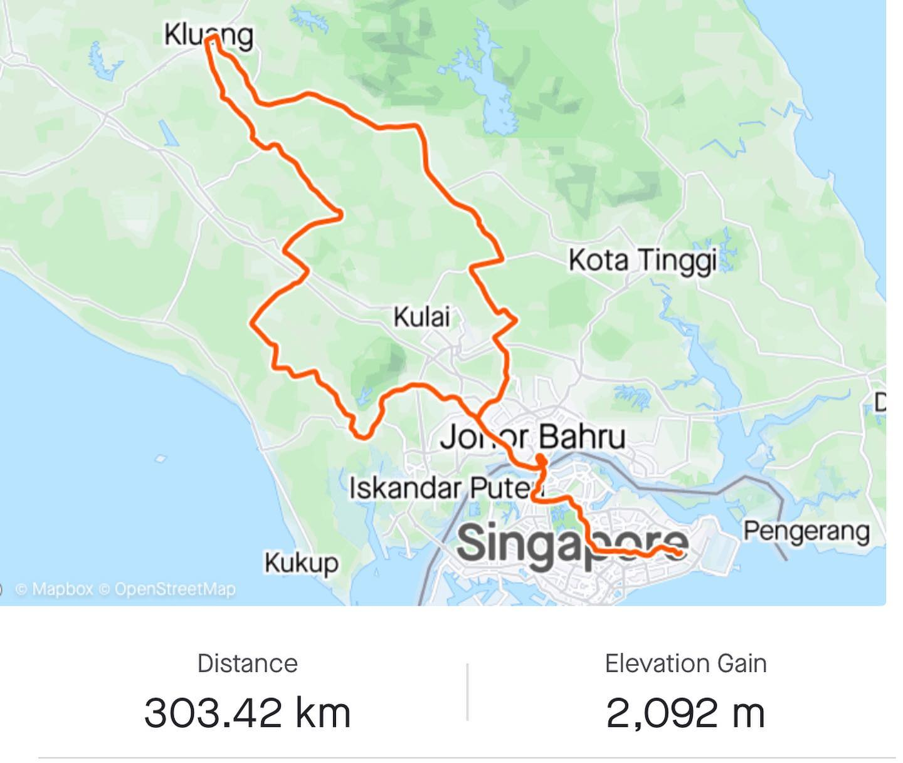

Whose great idea it was to start Saturday with a 300 km ride from Singapore to Malaysia 😅? Kids don’t repeat… bad influence! Joking of course 😉 Once the border with Malaysia reopened few weeks ago, we immediately resumed our long rides from Singapore to Malaysia. Today was the longest and the hottest 🥵 ride to Kluang. Totalled 303 km in 9:23 hr, not bad provided that the temperature was above 35 C most of the time. Feeling great and happy to get over COVID hangover and do some crazy cool endurance stuff with my buddies! Watch the videos from this trip in stories 🚴🏽♂️🚴🏽🚴🏽♂️🚴🏽🚴🏽♂️ #weekendwarriors #cycling #cyclinglife #cyclistsofinstagram #kluang #malaysia #singapore #audax #audaxbike
2022-05-14 23:27:39
Back to main page